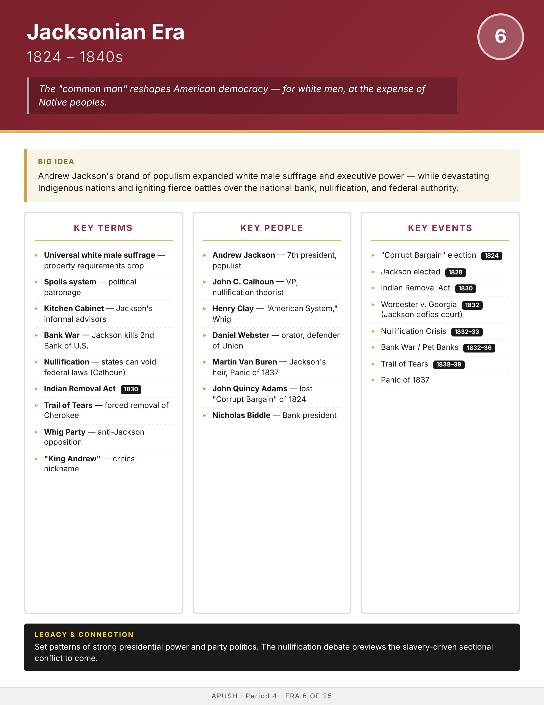

Era
Wise
AP History
AP United States History
Home
Course Sequence
Eras
Exam Prep
← Course Sequence
Era 6 of 25 · AP Period 4 · Lessons 13–15
Jacksonian Era
1824–1840s
Open infographic full size
Print

← ERA 5
Early Republic
ALL ERAS
Eras index
ERA 7 →
Market Revolution & Reform